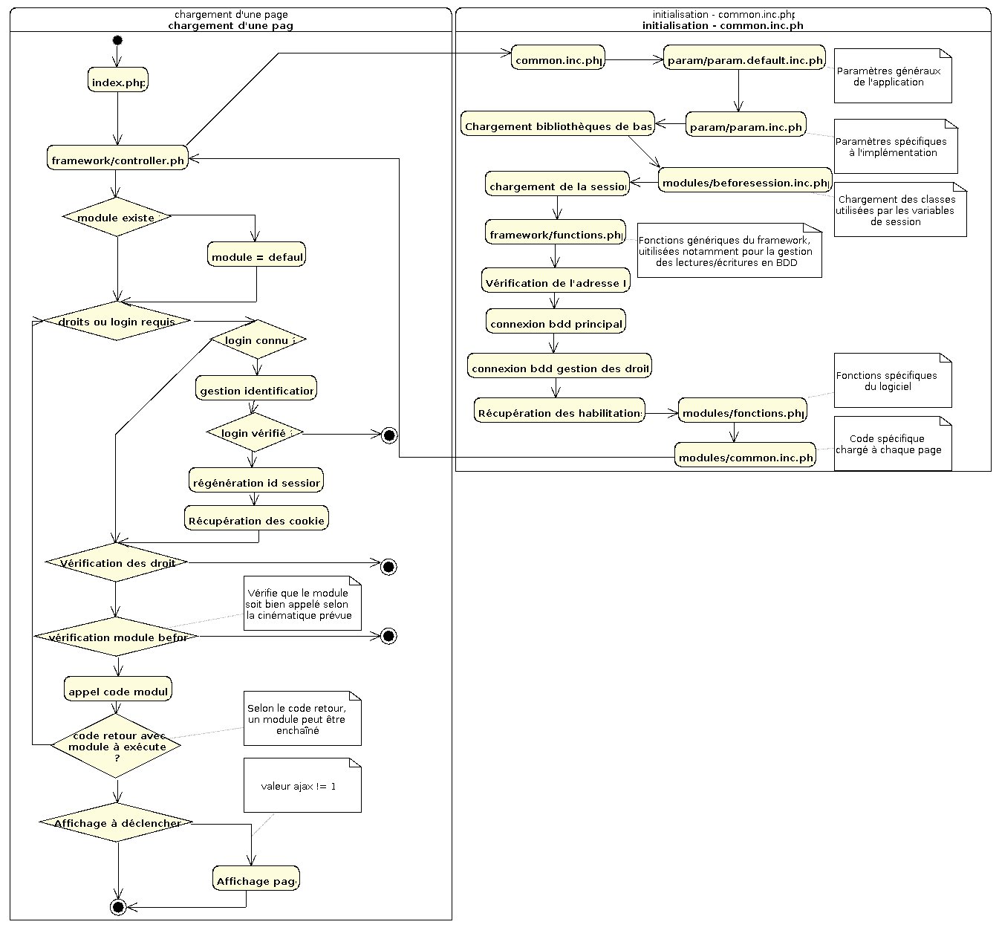

Organisation de l'application
Schéma général de fonctionnement
L'application est bâtie selon un modèle MVC (model - vue - controler). Ce
schéma récapitule l'ensemble des opérations réalisées à chaque appel d'un
module :


Dossiers utilisés par prototypePHP
display
Contient tous les dossiers utilisés pour l'affichage :
- CSS : les feuilles de style
- images : les images
- javascript : tout le code javascript, et notamment :
- fonctions.js : le code spécifique utilisé par prototypephp ;
- calendar : un calendrier accessible via un bouton ;
- datatables : un module jquery utilisé pour afficher les tableaux ;
- jquery-validation : un module permettant de réaliser des contrôles
de saisie avant envoi du formulaire (non implémenté pour le moment)
- templates : les modèles de document Smarty ;
- templates_c : le dossier de travail de Smarty.
doc
Documentation de l'application, avec un sous-dossier par langue. La page
index.php gère les accès à la documentation.
Framework
'L'intelligence" de prototypePHP. Il contient, entre autres :
- controller.php : le contrôleur de l'application, appelé
systématiquement, et qui gère les droits d'accès, l'appel aux modules,
la connexion aux bases de données, etc.
- common.inc.php : toutes les inclusions de bibliothèques nécessaires ;
- fonctions.php : les fonctions appelées notamment pour gérer les
lectures/écritures en bases de données ;
- identification : les fichiers utilisés pour gérer l'identification et
la gestion des droits ;
- import : une classe permettant de réaliser des imports et des exports
au format csv ;
- ldap : accès aux annuaires ldap ;
- navigation : génération du menu à partir de la description réalisée
dans le fichier param/actions.xml
install
Documentation sur l'installation de l'application, scripts de génération de
la base de données.
locales
dossier contenant les fichiers de langue. Un fichier par langue supportée.
modules
C'est LE dossier privilégié pour mettre le code de votre application ! Il
contient les fichiers et dossiers suivants :
- administration : dossier où mettre le code permettant de gérer les
tâches d'administration (si nécessaire) ;
- gestion : idem, mais pour les tâches de gestion ;
- classes : dossier pour stocker les fichiers de classe. Cela évite
d'avoir à chercher les classes dans toute l'arborescence...
- example : des exemples de code, pour créer des modules
- beforesession.inc.php : fichier appelé systématiquement avant
l'ouverture de la session. Permet de charger à chaque appel un fichier
de classe, par exemple pour gérer les instances stockées en variables de
session ;
- common.inc.php : fichier appelé systématiquement après
l'ouverture de la session. Il permet de récupérer les instances de
classe qui auraient été stockées en variable de session, par exemple.
- functions.inc.php : fichier appelé systématiquement, pour stocker les
fonctions génériques utiles dans l'application.
param
Contient tous les fichiers de paramètres et le fichier permettant de décrire
les modules et leur enchaînement. Les fichiers sont à adapter au programme :
- param.default.inc.php : les paramètres par défaut de l'application. Ce
fichier est fourni à chaque nouvelle livraison du code ;
- param.inc.php : les paramètres spécifiques à l'implémentation. les
paramètres sont lus après param.default.inc.php, et surchargent donc les
paramètres par défaut. Ce fichier doit
être livré sous le nom param.inc.php.dist
- gacl.ini.php : fichier contenant les paramètres utilisés par le plugin
phpgacl pour se connecter à la base de données des droits. Il doit
être livré sous le nom gacl.ini.php.dist
- actions.xml : contient tout le paramétrage d'accès aux modules et du
menu général (cf. document correspondant)
plugins
Contient tous les plugins "externes" utilisés dans PrototypePHP : adodb,
esup-phpcas, objetBDD, phpgacl, smarty...
test
Dossier destiné aux développeurs, quand il faut tester quelques aspects de
l'application sans toucher aux autres modules. Pensez à ne pas laisser
dedans du code qui pourrait présenter un danger en production !